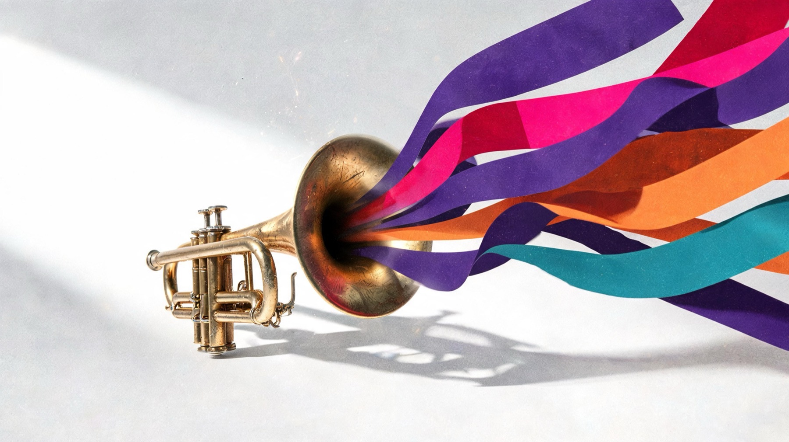
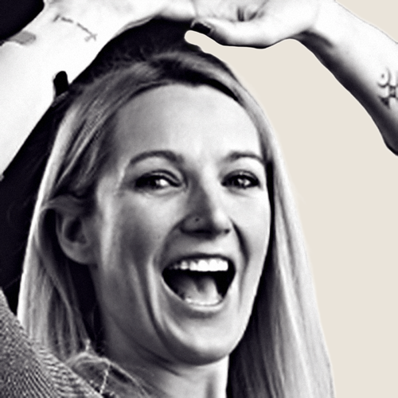

01
You give us one moment in time.
The date, the time, and the place you were born. That is the whole input. No quiz, no personality test, nothing for you to interpret. The chart is the raw material, not the product.
Personal psychoacoustics
Zodiac calculates four frequencies from the exact moment and place you were born, then a composer writes them into real music. About nine minutes a day, eyes open, no practice to learn.
In our 52-week beta, 98.6% of the people who finished the study said they would recommend it.
How it works
01Core
422Hz
Identity
Love
432Hz
Connection
Vitality
579Hz
Energy
Abundance
611Hz
Opportunity
A sample set, shown so you can see the shape of it. Yours are computed from your exact birth moment, so they belong to your chart and not to a type.
What comes out
Your frequencies are built into real compositions down at the level of the instruments. Not a tone over a track, and nothing you have to sit still for.

01
The date, the time, and the place you were born. That is the whole input. No quiz, no personality test, nothing for you to interpret. The chart is the raw material, not the product.
02
One for identity, one for connection, one for energy, one for opportunity. They are computed from your exact birth moment, down to the minute and the place, and they do not change as you change.
03
Your frequencies are built into real compositions down at the level of the instruments, so what you get stays music you actually want playing. Nine minutes a day, while you work, walk, cook, or sleep.
One track from the library
02Astrolith exists four times, once for each of your four frequencies. You choose which one gets the time.
Focus · Meditate · Calm · Deep · Flow
A steady pulse that never distracts. One honest block of focused work, then the music ends and that is your cue to look up.
Four versions, one per frequency
Core
Astrolith
Love
Astrolith
Vitality
Astrolith
Abundance
Astrolith
In their own words
03Practitioners and researchers
07
“Psychology shows that the identities we construct can become so rigid that they limit what we notice, how we think, and even the possibilities we perceive. What interests me about Zodiac.fm is not that it tells people who they are, but that it may help them access aspects of themselves that have always been there. Through personalized frequencies rather than language alone, it provides another pathway into self-awareness. When people become more coherent with themselves, they often make clearer decisions, relate more authentically, and experience greater presence.”
Srini Pillay, M.D.
Harvard-trained psychiatrist and brain-imaging researcher

“This music tickled my soul and reminded me that there’s such a connection between vibration, the stars and the sounds that are coordinated by higher intelligence. Give it a try — you’ll love it.”
Debra Silverman
Astrologer to Sting, Jennifer Aniston, and more

“Without doing anything but listening, I become a different person. I shift into the version of me I actually want to be. I can tap into different frequencies based on what I need — abundance when I’m visualizing, love when I want to connect with people, core when I need to realign.”
Joey Vaillancourt
VP of Marketing, BiOptimizers

“Bypassing the mind and speaking directly to the body.”
Barbara Ditlow
Human Design mentor, trained and endorsed by Ra Uru Hu

“If you’re tired of living out of tune with yourself, this is your invitation home.”
Rhonda Britten
Author of “Fearless Living,” Emmy Award-winner, Founder, Fearless Living Institute

“Feels like coming home to myself.”
Katie Wells
Founder, Wellness Mama, best-selling author

“The cutting-edge tool I didn’t know I needed.”
Anja Zibert
Founder, Rebels Rising, a conscious recruiting firm
98.6%
of everyone who finished the beta would recommend it.
84%
of the people who used it as designed called it life-changing.
Our own 52-week beta study: 300 people started, 278 finished. “As designed” means about nine minutes a day on average, balanced across all four frequencies. It was rigorous for a beta, and we do not present it as clinical proof.
Members
07“Oh there you are, Hilary, I found you.”
Hilary Wilson
Member, about a week in

“I feel like ME again.”
Amber Hedrick
Member, first week

“It lets you finally feel the parts of yourself you have only ever read about.”
Zehra Ashary
Member, London

“My wife especially loves the man I am turning into since subscribing.”
Ken Hoffman
Member, Operations Manager, WNY Dyslexia Specialists
“I kid you not, from the first 631 Hz tonal ring in my ears, it’s as if my soul comes alive”
Ellen Grimaldi
Member, Mission, KS
“This has been a subtle and profound new practice I have incorporated into my daily life! I feel more centered and grounded and connected during and after listening to the CVF immersions.”
Kevin Knabe
Member, six months in
“It felt like a ‘coming home to myself’ experience.”
Laura
Member
Price and guarantee
04$110 a year
or
$17.50 a month
Your four frequencies, composed into music, for as long as you are a member.
Get your frequenciesBilled in USD. Cancel from your account settings at any time.